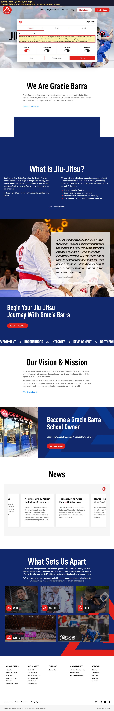
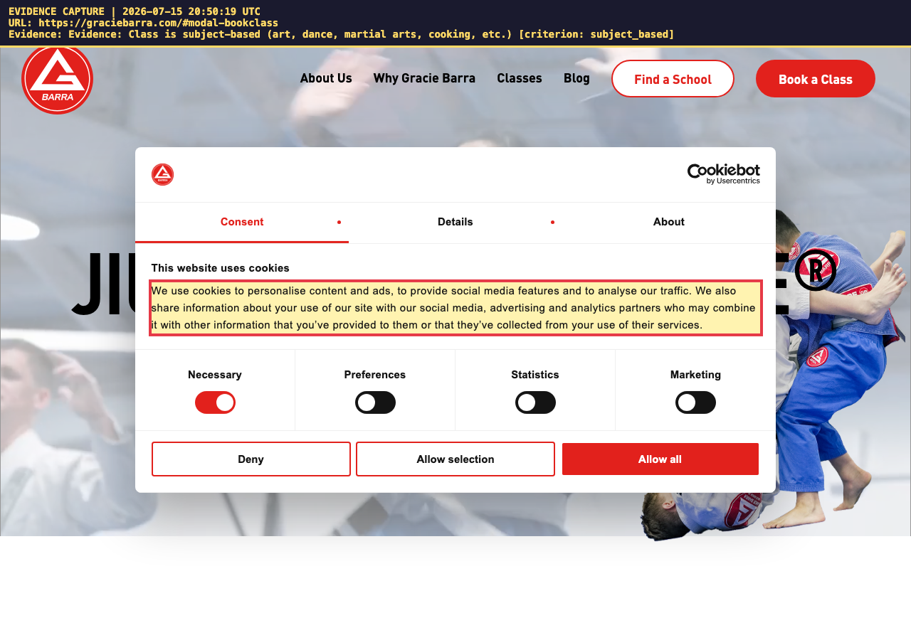
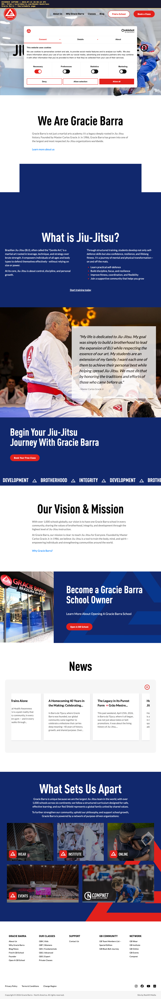
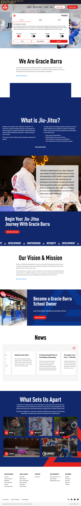

This report was produced by an automated review assistant on 2026-07-15 20:50 UTC. It gathers public-website evidence only. A human reviewer makes the final approve/deny decision.
| Participant | Yosef B. (age 22) |
| Category | Community Class |
| Requested | Adult Group Jiu Jitsu |
| Provider / Vendor | Gracie Barra |
| Website / link | https://graciebarra.com |
| Fee stated on form | fee per session: $30 per session |
| Review date | 2026-07-15 20:50 UTC |
| Fee on application | Fee found on website | Verdict |
|---|---|---|
| fee per session: $30 per session | not published | not published |
Automated rule-based check of Gracie Barra's website found 4 of 8 website-verifiable items, with 4 needing manual review. No AI model was used for this review — a human should double-check any 'Needs Review' items before deciding.
| Status | Criterion | What the website shows | Evidence |
|---|---|---|---|
| ⚠️ Needs Review | Class is open to and attended by the broader public (not restricted to disabled/OPWDD individuals) | Could not find clear language about public access — please check manually. | — |
| ⚠️ Needs Review | Class has published fees (a public price is visible) | No price was visible on the page (sites often block automated readers) — please confirm the published fee manually. | — |
| ⚠️ Needs Review | Fees are identical for OPWDD and non-OPWDD individuals (no special/segregated pricing) | No price was found, so identical-pricing could not be confirmed — please review. | — |
| ✅ Found | Class is subject-based (art, dance, martial arts, cooking, etc.) | The page describes a subject-based activity ('art'). | https://graciebarra.com/#modal-bookclassevidence/evidence-subject-based-evidence-class-is-subject-based-art-danc.png |
| ✅ Found | Class does NOT give college credits | No mention of college credit found on the page (inferred from absence). | — |
| ✅ Found | Class is NOT clinical/therapy in nature | No clinical/therapy framing found on the page (inferred from absence). | — |
| ✅ Found | A published schedule exists | The page shows scheduling information ('calendar'). | https://graciebarra.com/#modal-bookclassevidence/evidence-published-schedule-evidence-a-published-schedule-exists.png |
| ⚠️ Needs Review | Fee-match: published fee is consistent with the 'Fee per Session' on the form | Could not parse a fee from both the form and the website — please compare manually. | — |
| 🏢 Internal — not website-verifiable | Community classes are currently approved in the participant's budget | Depends on internal records (budget / Life Plan / documents) — not checkable from the public web. | — |
| 🏢 Internal — not website-verifiable | Class provides opportunity for community inclusion | Depends on internal records (budget / Life Plan / documents) — not checkable from the public web. | — |
| 🏢 Internal — not website-verifiable | Class accommodates the individual's health and/or safety needs | Depends on internal records (budget / Life Plan / documents) — not checkable from the public web. | — |
| 🏢 Internal — not website-verifiable | Class increases independence or substitutes for human assistance | Depends on internal records (budget / Life Plan / documents) — not checkable from the public web. | — |
| 🏢 Internal — not website-verifiable | Class does not duplicate Medicaid state plan / HCBS waiver / Board of Education services | Depends on internal records (budget / Life Plan / documents) — not checkable from the public web. | — |
| 🏢 Internal — not website-verifiable | Class relates to a habilitative need in the Life Plan (valued outcome) | Depends on internal records (budget / Life Plan / documents) — not checkable from the public web. | — |
All captures are date-stamped with the capture time (UTC) and URL burned into the image.
evidence-published-schedule-evidence-a-published-schedule-exists.png

evidence-subject-based-evidence-class-is-subject-based-art-danc.png

fullpage-gracie-barra-fee-schedule-page.png (whole-page record)

fullpage-gracie-barra-main-page.png (whole-page record)
